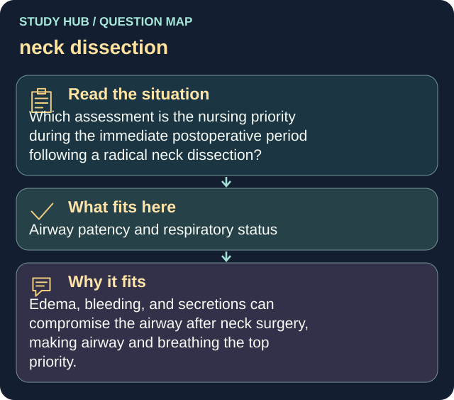

Which assessment is the nursing priority during the immediate postoperative period following a radical neck dissection?
Answer
Airway patency and respiratory status
Reasoning
Edema, bleeding, and secretions can compromise the airway after neck surgery, making airway and breathing the top priority.
Why the other answers do not fit
- Bowel sounds
- Urine color
- Calf tenderness
Shared reasoning for choices without a separate note: Edema, bleeding, and secretions can compromise the airway after neck surgery, making airway and breathing the top priority.
